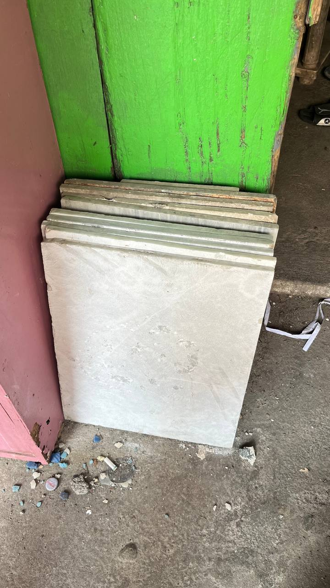
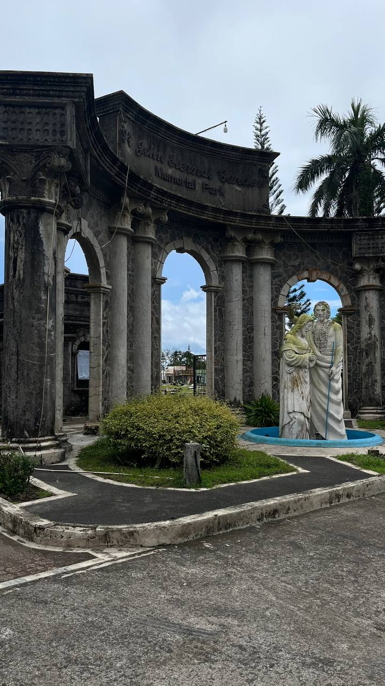

Gawi ng nagbebenta ng kandila

Ang pang-araw-araw na gawain ay kinabibilangan ng paggawa, paghahanda ng wax at mitsa, paghulma, pagbalot, at pag-display ng kandila sa labas upang makita ng mga kliyente. May kinagawian din silang pagdarasal bago at matapos ang paggawa upang maging maayos ang bawat kandila at makabenta ng maayos. Bago ibenta ang produkto, inihahanda nila ang bawat kandila sa pamamagitan ng tamang timpla ng wax, maayos na mitsa, at wastong hugis.
Mahalaga ang pagbibigay oras sa bawat kandila upang maging maayos at maganda, at upang mapanatili ang tiwala ng mga suki. Ang bawat hakbang, mula sa paggawa hanggang sa pag-display ng kandila sa labas, ay nangangailangan ng maingat at maayos na proseso upang maiwasan ang pinsala at masayang produkto. Ang pang-araw-araw na gawain ay nagpapakita ng dedikasyon sa kalidad ng produkto at respeto sa tradisyon ng paggawa ng kandila.
Basahin pa →Gawi ng nagbebenta ng bulaklak

Kinabibilangan ng pag-order, pag-aayos, pagbababad sa tubig, at pagdi-display ang proseso ng paghahanda at pagbebenta ng bulaklak. Mahalaga ang maayos na pagbuo at pag-aayos ng mga bulaklak upang maging kaakit-akit sa mga mamimili. Iba-iba rin ang paraan ng pag-aayos depende sa okasyon, tulad ng paglalagay sa basket para sa patay at iba namang estilo para sa kaarawan.
Nakatuon ang mga nagtitinda sa paulit-ulit na prosesong ito — pagbili, pagbababad, at maingat na pag-aayos — upang mapanatili ang ganda at pagiging kaaya-aya ng mga bulaklak. Pangunahing nakatuon sa pag-aalaga at pagpapanatili ng kalidad ng kanilang mga produkto ang gawi ng mga nagtitinda ng bulaklak. Nakapokus sila sa mga regular na gawain tulad ng pag-aayos, pagbebenta, at pagpapanatili ng kasariwaan at kaayusan ng kanilang paninda.
Basahin pa →Gawi ng gumagawa ng lapida

Ang mga gumagawa ng lapida sa Daet, Camarines Norte ay may regular na gawain sa kanilang hanapbuhay. Kabilang dito ang pag-ukit, pagpipinta, at pag-aayos ng mga lapida sa shop bago ipapadala o ipapakita sa kliyente. Kasama rin sa kanilang pang-araw-araw na gawain ang pag-aalaga sa mga kagamitan at pagpapanatili ng kaayusan sa paligid. May kinagawian din sila na magsagawa ng maikling dasal bago at pagkatapos ng paggawa bilang pasasalamat at paghingi ng gabay sa kanilang trabaho.
Bago simulan ang paggawa, inihahanda nila ang mga kagamitan tulad ng ukit, pintura, at materyales sa isang lugar upang madaling dalhin at magamit sa proseso. Mahalaga sa kanila ang pagiging maayos, pasensya, tiyaga, at maingat na paghawak sa bawat kagamitan upang masiguro na ang lapida ay may mataas na kalidad at tugma sa kagustuhan ng kliyente.
Basahin pa →Gawi ng naglilinis at nag-aalaga ng puntod

Ang mga naglilinis sa sementeryo sa Daet ay may regular na gawain tuwing linggo, kabilang ang pagwawalis, pag-aayos ng mga bulaklak, at pagtitiyak na maayos ang lahat ng kagamitan at paligid bago dumating ang mga bumibisita. Kabilang sa kanilang kinagawian ang pag-aalay ng kandila sa mga puntod ng yumaong kliyente bilang tanda ng paggalang at pagmamalasakit sa pamilya ng namayapa.
Bago simulan ang trabaho, inihahanda nila ang mga kagamitan tulad ng pala, itak, at walis sa isang lalagyan upang madaling dalhin at gamitin sa araw ng paglilinis. Mahalaga sa kanila ang mataas na kalidad ng serbisyo, pagiging maayos at malinis, pasensya, at maingat na paghawak sa bawat kagamitan. Upang masiguro ang maayos na serbisyo, sinisimulan nila ang paglilinis ng mga puntod isang linggo bago ang Undas.
Basahin pa →Gawi ng gumagawa ng ataol o kabaong

Ang mga gumagawa ng kabaong sa Daet, Camarines Norte ay may pang-araw-araw na gawain na nakatuon sa karpinterong trabaho tulad ng paggawa ng bahay, muwebles, at iba pang gawaing kahoy, at isinasabay lamang ang paggawa ng kabaong kapag may order. Mahalaga sa kanila ang pagtiyak na maayos at matibay ang bawat produkto upang hindi mapahiya sa pamilya ng yumao. Sa kanilang gawain, kinagawian din ang pagdarasal bago magsimula bilang paggalang sa yumao at sa trabaho.
Ang paggawa ng kabaong ay nagsisimula sa maingat na pagsukat ng sukat ng yumao, pagputol ng plywood o kahoy, at pagbuo ng istruktura hanggang sa ito ay mapakinis at maayos na matapos bago ibigay sa pamilya. Mahalaga ang tamang sukat, matibay na pagkakagawa, at maayos na pagtatapos upang masigurong magagamit ito nang maayos at maipakita ang respeto sa yumao.
Basahin pa →Gawi ng make-up artist ng patay
Ang mga gumagawa ng make-up sa patay ay karaniwang nakatuon sa pag-aayos ng mga kliyente sa iba't ibang okasyon at isinasagawa lamang ang ganitong serbisyo kapag may humihiling. Mahalaga sa kanilang gawain ang malinis na proseso, hiwalay na gamit para sa yumao, at maayos na paghahanda ng lugar ng trabaho. Kinagawian din ang pagdarasal bago magsimula bilang paggalang sa yumao at sa pamilya nito.
Ang proseso ng pagme-make-up sa yumao ay nagsisimula sa paghahanda ng malinis at hiwalay na mga gamit upang matiyak ang kalinisan at respeto sa ginagawa. Inaayos muna ang mukha ng yumao bago dahan-dahang nilalapatan ng make-up gamit ang tamang timpla ng kulay upang maging natural at presentable ang itsura. Mahalaga ang pagiging mahinahon, maingat, at malinis sa bawat galaw upang maiwasan ang labis o hindi angkop na itsura.
Basahin pa →